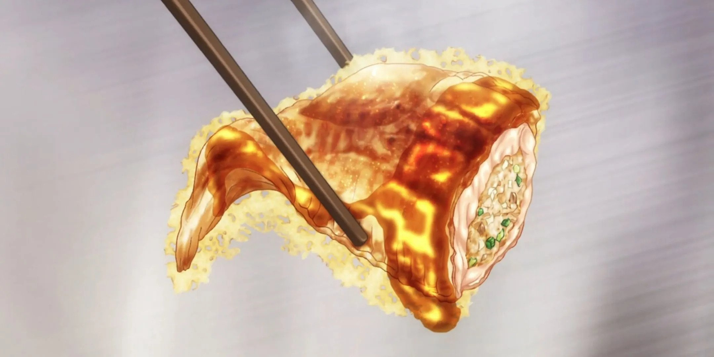

Cheese-Feathered Hanetsuki Gyoza

Description
When Soma faced off against Eizan, known as "The Alchemist" for his ability to steer his cooking in the
direction that negates the flavor of his opponents, he didn't seem fazed one bit. Even when the judges had
a bias towards "gourmet food", he just cooked his food and proved that gourmet can be unique.
Ingredients
- Wings
- 18 wings (flats with wing tips)
- 2 cup pork dumpling filing
- oil
- Sauce
- Toasted sesame seeds
- Green Onion
- 3 cloves garlic
- 2 tablespoon ginger
- 3 tablespoon gochujang
- 3 tablespoon honey
- 3 tablespoon brown sugar
- 3 tablespoon rice vinegar
- 1 1/2 tablespoon ketchup
- oil
- Dredge
- 1 cup potato starch
- 1/4 cup cornstarch
- 2 teaspoon garlic powder
- 1 teaspoon kosher salt
- 1/4 teaspoon black pepper
Steps
- For the dredge:
- Whisk together all the ingredients in a medium bowl and set aside.
- For the sauce:
- Mix together all the ingredients for the sauce EXCEPT for
the minced ginger and garlic. In a large nonstick pan over medium heat, add
a small amount of vegetable oil and sauté the minced ginger and garlic until
fragrant. Add the premixed sauce and heat until it bubbles. Remove from heat
and set aside.
- For the wings:
- Debone the flats of the chicken wings and stuff the boneless flats with
about 1/2 to 1 tablespoon of the Chinese pork dumpling filing, depending
on the size of the wing. Close the wing's opening and repeat with
remaining wings. DON'T overstuff the wings! It'll expand when cooked.
- Working with a few at a time, gently coat all the wings with the dredge
mixture and dust off the excess dredge if needed.
-
In a heavy bottom pot, heat 2-3 inches of oil to and maintaining at 325°F
for first fry. Carefully place the dredged wings into the oil and fry them
for about 4 minutes. Remove them from the oil.
- For the second fry, heat the oil and maintain it at 375°F. Return the
wings to the oil and fry tor about 2-3 minutes, or until the wings starts
to turn golden, is crispy and the wings cooked through. Remove from the
oil and drain on paper towels.
- While the wings are draining, reheat the sauce over a medium heat until it
starts to bubble. Add the wings and toss until the wings are coated well with sauce.
- Serve the wings immediately with a sprinkle of sesame seeds and green onions.
Back to recipes